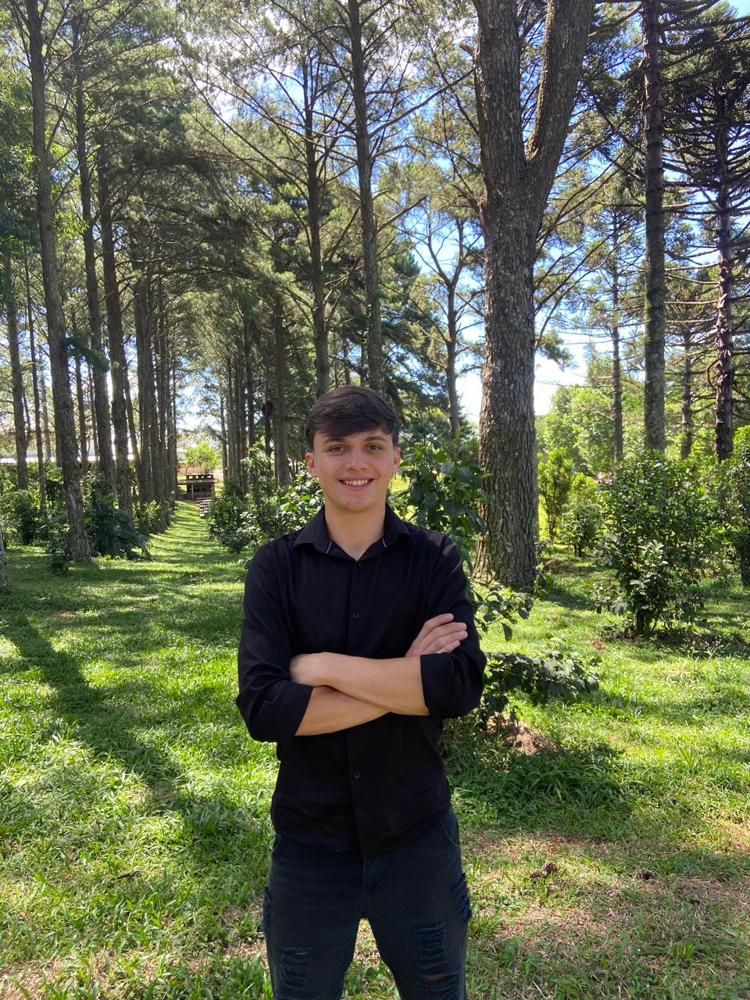

Sobre mim
Olá! Meu nome é Hyago Antonio Webery Tonelli, mas pode me chamar de Hyago. Tenho 18 anos e sou apaixonado por tecnologia e desenvolvimento de software — tanto no front-end quanto no back-end.
Atualmente, trabalho na empresa Stara, no setor de protótipos, onde venho aprendendo muito sobre inovação, resolução de problemas e o funcionamento prático de soluções tecnológicas. Estou sempre em busca de novos desafios que me permitam evoluir como profissional e expandir meus conhecimentos.
Sou movido pela curiosidade e pelo desejo de construir coisas que realmente funcionem e façam a diferença. Acredito que o desenvolvimento vai muito além do código — é sobre criar experiências, resolver problemas e transformar ideias em realidade.
Este portfólio é um reflexo do meu caminho até aqui. Clicando no icone abaixo, será redirecionado ppara a minha página no GitHub.